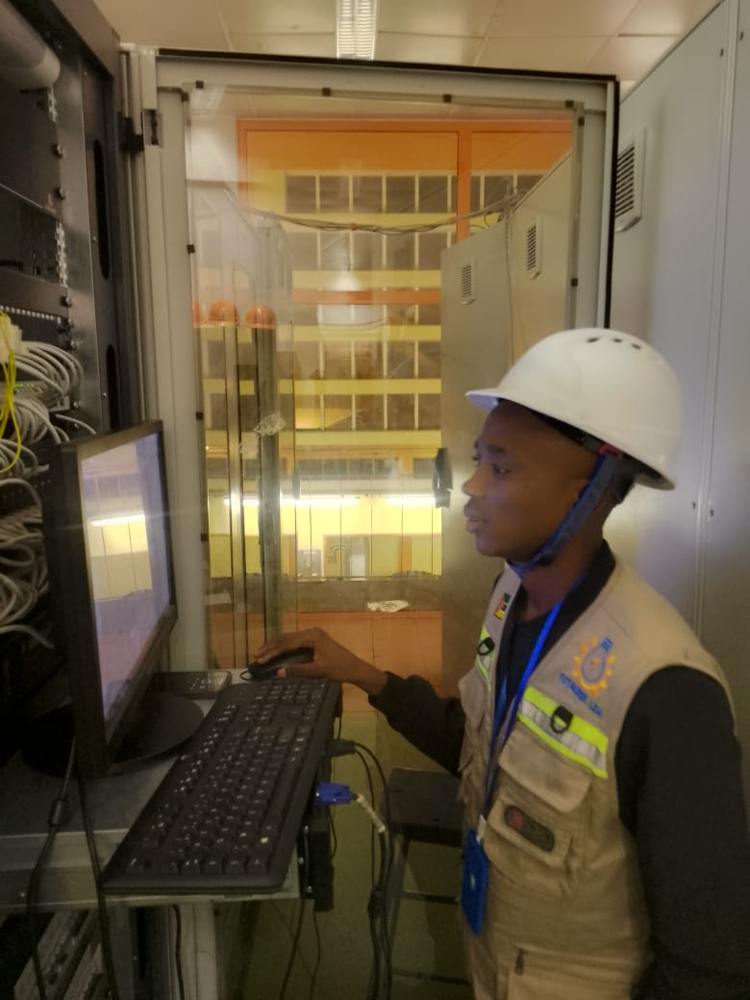
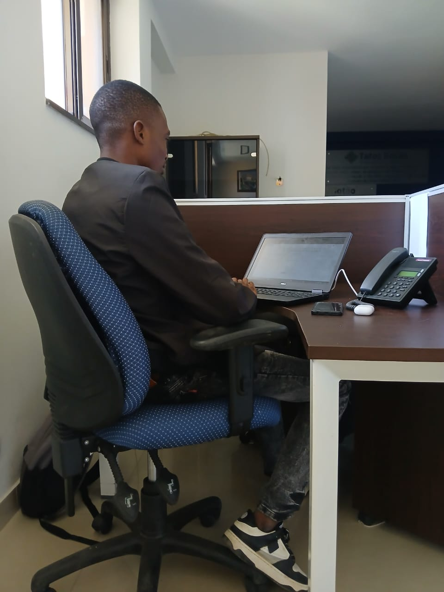
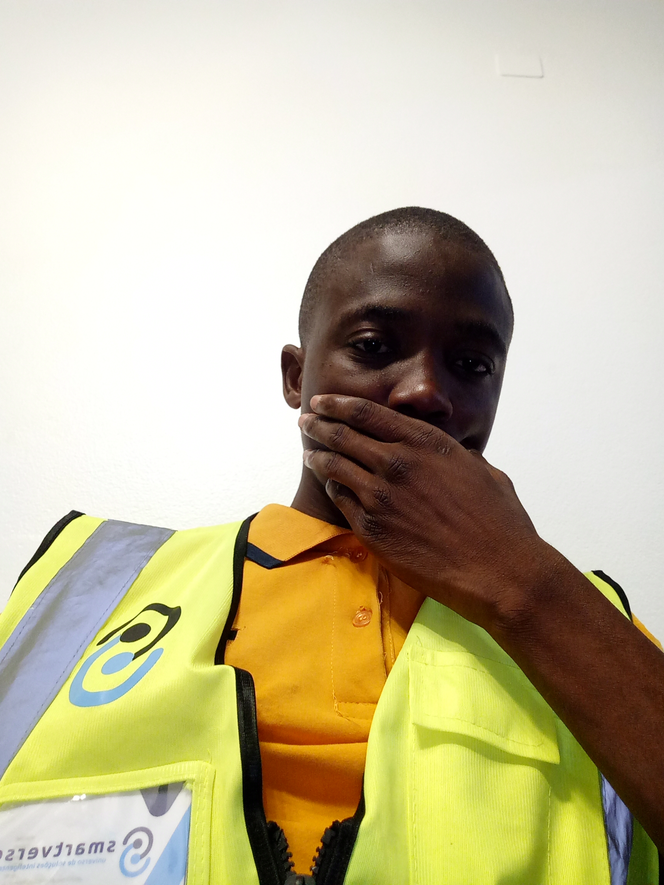
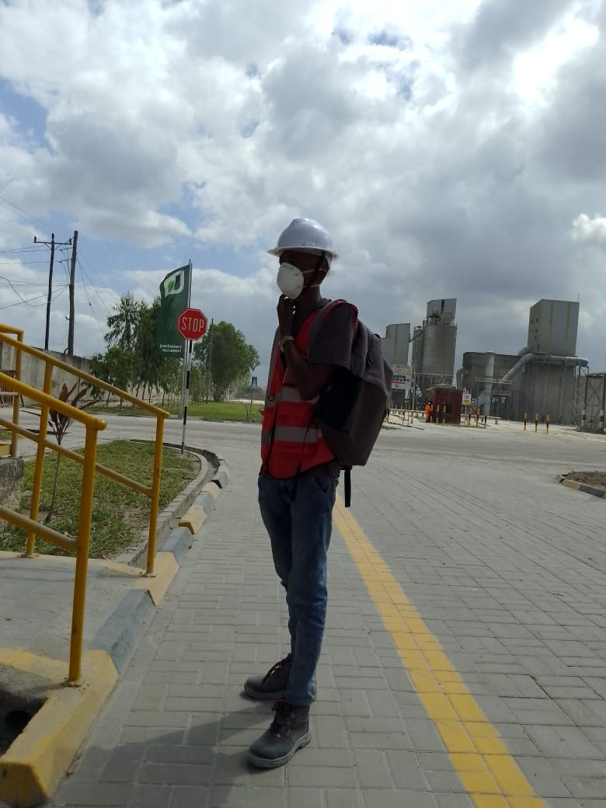
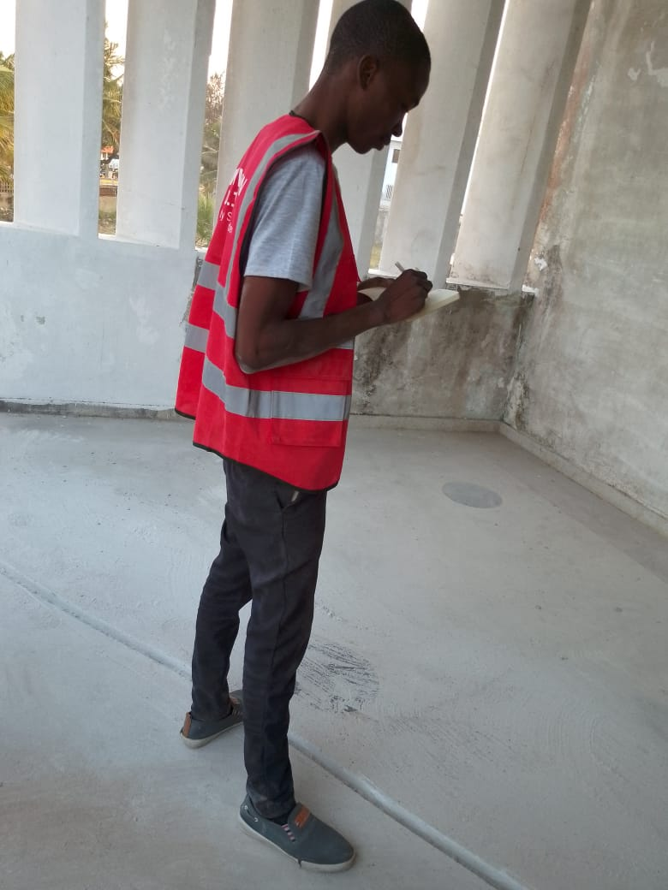
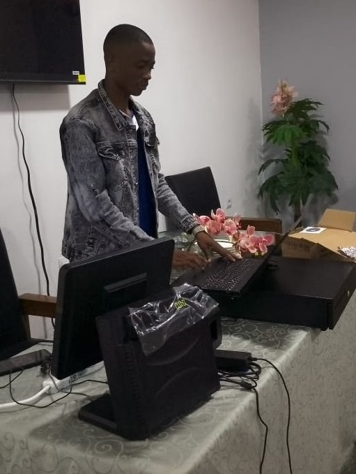

Historial profissional
Experiência
Habilidades Técnicas
Administração de Redes — LAN/WAN/VLAN, DHCP, DNS
Segurança da Informação — Firewalls, VPNs, Controle de Acesso
Infraestrutura TI — Servidores e Plataformas Digitais
Sistemas Operacionais — Windows Server & Linux
Desenvolvimento e Administração de Sistemas
Bases de Dados — SQL Server, Oracle, PostgreSQL
ERP — Siversa, Primavera, PHC
Análise de Dados — SQL, Excel, DHIS2, Power BI
Experiência Profissional
Assistente de Tecnologias Digitais (Facilitador Comunitário)
Projecto CRP IV – Programa para Rádios Comunitárias
Setembro 2025 — Actual
h2n.org.mz
- Participar no desenvolvimento comunitário e da Rádio Comunitária
- Ministrar sessões de ensino interativas e dinâmicas
- Monitorar o progresso dos participantes e oferecer suporte personalizado
- Colaborar na implementação de novas plataformas tecnológicas
- Supervisionar o desenvolvimento e manutenção de plataformas digitais
- Incorporar inovações tecnológicas no processo educativo
- Colaborar com equipe de MEAL no monitoramento das atividades
- Apoiar a equipe de campo no desenvolvimento das atividades em terreno

Consultor de Infraestrutura TI
Smartvero · Centrais EDM de Mavuzi e Chicamba
Fevereiro 2025
- Alojar e configurar plataforma de Gestão de Arquivos e Metas nas Centrais da EDM
- Demonstrar o funcionamento da plataforma para as equipas das centrais
- Reestruturar a rede interna nas Centrais da EDM — Manica

- Administrar servidores, redes de computadores e sistemas
- Participar no desenvolvimento da plataforma de microcrédito
- Help Desk — manutenção de hardware e software
- Configurar e gerenciar sistemas de CCTV
- Técnico de Primavera ERP
- Coordenar procurement e logística de material informático
- Analisar dados com Power BI e Excel

- Desenvolvimento de plataformas Web e Mobile
- Implementar mecanismos de segurança informática
- Atendimento ao cliente em Help Desk
- Configurar redes LAN/WAN dos clientes
- Instalação e treinamento do software Siversa ERP
- Auxiliar na organização das atividades semanais
Algumas Participações

Manutenção de rede interna — Cimentos de Moçambique, SA
Dondo, Sofala · 2024

Supervisionar montagem de redes de computador e CCTV — Tatos, SA
Beira, Sofala · 2024
Formador de Excel Avançado e Informática — REJOCOM
Beira, Sofala · 2024

Instalação e configuração de Siversa ERP em diversos estabelecimentos
Búzi, Sofala · 2024